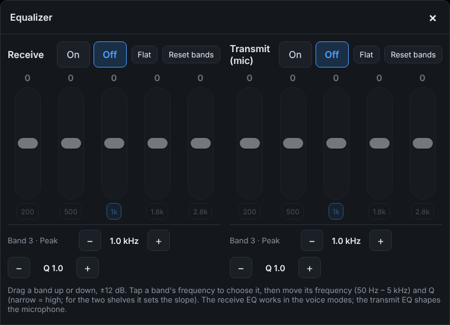
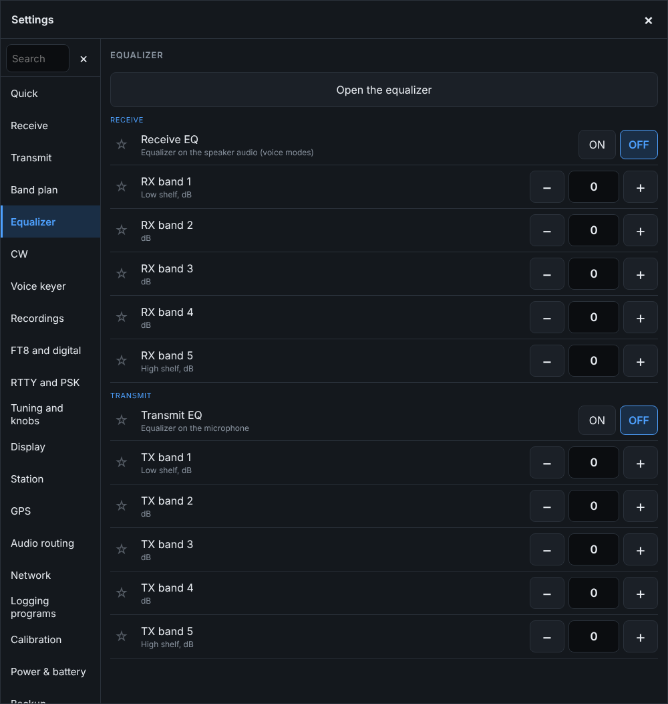

Equalizer#
Two five-band parametric equalizers: one for what you hear (receive) and one for your microphone (transmit). Open them from the Equalizer tile in the voice modes, or More → Equalizer → Open the equalizer.

Each has a low shelf, three peaks and a high shelf, ±12 dB each, starting at 200 Hz, 500 Hz, 1 kHz, 1.8 kHz and 2.8 kHz.
- Turn the receive or transmit equalizer On.
- Drag a band up or down for its gain.
- Tap a band's frequency to pick it, then use − / + to move its frequency (50 Hz–5 kHz) and Q (0.3–8; narrow = high). For the shelves Q sets the slope.
- Flat zeroes the gains; Reset bands puts the frequencies and Q back.
The receive EQ works in the voice modes (after the noise reduction); the transmit EQ shapes the microphone in the voice modes, after the compressor. Neither applies to RADE or the data modes.

Receive
| Setting | Console name | Default | Values | What it does |
|---|---|---|---|---|
| Receive EQ | RXEQ | OFF | ON, OFF | Equalizer on the speaker audio (voice modes) |
| RX band 1 | RXEQ1 | 0 | -12–12 | Low shelf, dB |
| RX band 2 | RXEQ2 | 0 | -12–12 | dB |
| RX band 3 | RXEQ3 | 0 | -12–12 | dB |
| RX band 4 | RXEQ4 | 0 | -12–12 | dB |
| RX band 5 | RXEQ5 | 0 | -12–12 | High shelf, dB |
Transmit
| Setting | Console name | Default | Values | What it does |
|---|---|---|---|---|
| Transmit EQ | TXEQ | OFF | ON, OFF | Equalizer on the microphone |
| TX band 1 | TXEQ1 | 0 | -12–12 | Low shelf, dB |
| TX band 2 | TXEQ2 | 0 | -12–12 | dB |
| TX band 3 | TXEQ3 | 0 | -12–12 | dB |
| TX band 4 | TXEQ4 | 0 | -12–12 | dB |
| TX band 5 | TXEQ5 | 0 | -12–12 | High shelf, dB |
Each band's frequency and Q are kept as RXEQ1F…TXEQ5F (Hz) and
RXEQ1Q…TXEQ5Q (Q × 10, so 10 is Q 1.0).